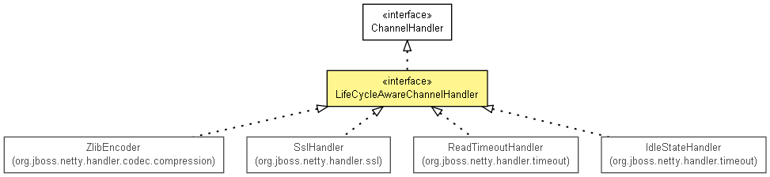

org.jboss.netty.channel
接口 LifeCycleAwareChannelHandler
- 所有超级接口：
- ChannelHandler
- 所有已知实现类：
- IdleStateHandler, ReadTimeoutHandler, SslHandler, ZlibEncoder
public interface LifeCycleAwareChannelHandler
- extends ChannelHandler

一个当它被添加到ChannelPipeline或从ChannelPipeline删除时被通知的
ChannelHandler.
在beforeAdd(ChannelHandlerContext)方法或
afterRemove(ChannelHandlerContext)方法里调用
ChannelHandlerContext.sendUpstream(ChannelEvent)或
ChannelHandlerContext.sendDownstream(ChannelEvent)
可能会导致一个意料之外的行为.这是因为上下文对象可能还没完全被添加到管道或已不再是管道的一部分了.
beforeAdd
void beforeAdd(ChannelHandlerContext ctx)
throws java.lang.Exception
- 抛出：
java.lang.Exception
afterAdd
void afterAdd(ChannelHandlerContext ctx)
throws java.lang.Exception
- 抛出：
java.lang.Exception
beforeRemove
void beforeRemove(ChannelHandlerContext ctx)
throws java.lang.Exception
- 抛出：
java.lang.Exception
afterRemove
void afterRemove(ChannelHandlerContext ctx)
throws java.lang.Exception
- 抛出：
java.lang.Exception